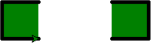
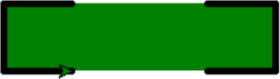
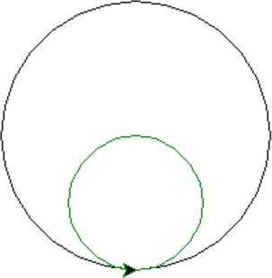
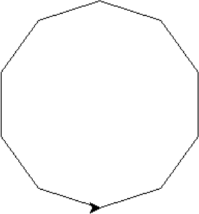
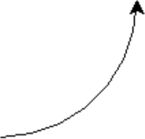
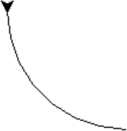

„Želví“ grafika – další vlastnosti
by Jiří Znamenáček
Úvod
Tato přednáška je míněna především jako sbírka receptů, které vám do začátku usnadní život při vytváření programů v želví grafice. Kdo by chtěl vědět víc, přečte si manuál a některé z bezpočtu knih, které byly napsány o Logu a/nebo želví grafice.
Všechny příkazy je třeba volat přímo na importovaném modulu turtle (nebo na jeho příslušném ekvivalentu).
PS: Spousta příkazů želvy má alias jiného jména, který se však chová úplně stejně jako funkce základní. Některé příkazy pak mají aliasy dokonce dva! Ne všechny budu uvádět, tak s tím počítejte a podívejte se do oficiální dokumentace.
Pohyby želvy – relativně
Želva se pohybuje po obrazovce především relativně, to znamená za pomomoci následujících příkazů:
-
forward(KROKŮ)– posun o KROKŮ ve směru natočení želvy; -
backward(KROKŮ)– posun o KROKŮ dozadu proti směru natočení želvy; -
left(STUPŇŮ)– otočení želvy na místě o STUPŇŮ doleva; -
right(STUPŇŮ)– otočení želvy na místě o STUPŇŮ doprava.
Pohyby želvy – absolutně s kreslením
Ale jelikož jde o pohyb v rámci soustavy souřadné, dokáže reagovat i na klasické souřadnice:
-
goto(x, y=None)– přesunutí želvy na nové souřadnice v ploše x, y;📝Pokud je y=None, očekává se parametr x buď jako explicitní dvojce nebo v podobě vektoru Vec2D (který vrací například funkce position()). -
setx(x)– přesunutí želvy na novou souřadnici x při zachování původní souřadnice y; -
sety(y)– přesunutí želvy na novou souřadnici y při zachování původní souřadnice x;
Pohyby želvy – absolutně bez kreslení
Kromě výše uvedených absolutních přesunů, které za sebou kreslí (a případně i vyplňují vnitřky nakreslených obrazců), můžete od Python'u 3.12 (aneb želva se neustále vyvíjí :-) želvu na nové souřadnice i teleportovat bez kreslení:
teleport(x, y=None, *, fill_gap=False)
Narozdíl od příkazu goto() zde žádné přetěžování parametru x není, obě souřadnice se zadávají prostě jedním číslem. Možnosti jsou tudíž následující:
-
teleport(x, y)– posun na souřadnice (x, y); -
teleport(X)– posun v x-ovém směru na souřadnici X při zachování původní y-ové souřadnice; -
teleport(y=Y)– posun v y-ovém směru na souřadnici Y při zachování původní x-ové souřadnice;📝Zde samozřejmě jméno parametru uvést musíte, jinak to bude x.
Případný třetí parametr fill_gap řídí vyplňování vznikajícího obrazce, i když příslušná čára není při tomto příkazu nakreslena.
„teleport()“ vs „goto()“
Rozdíl při NEvyplňování je jednoduchý – teleport() za sebou při přesunu nezanechává čáru. Naopak při vyplňování se dá v podstatě říci, že teleport() se může chovat skoro stejně jako goto(), pouze hranice případně vyplněného obrazce nebude vidět.
Výchozí nastavení fill_gap=False rozdělí kreslený obrazec na dva – před přesunem a po něm – a každý vyplní zvlášť:

Nastavení fill_gap=True způsobí stejné chování jako goto(), byť příslušná hrana obrazce bude neviditelná:

PS: vektor „Vec2D“
Želva na mnoha místech podporuje zadávání (a vracení) souřadnic kromě klasické dvojce hodnot (x, y) také jako objekt typu Vec2D. Jako potomek n-tice se chová jako n-tice, ale jeho velkým přínosem je přímá podpora vektorových operací, konkrétně:
>>> from turtle import Vec2D as v
>>> a = v(1, 1)
>>> a
(1.00,1.00)
>>> 3 * a
(3.00,3.00)
>>> abs(a) # vzdálenost bodu od počátku soustavy souřadné
1.4142135623730951
>>> a.rotate(45) # rotace vektoru (vrátí nový vektor, původní nezmění)
(0.00,1.41)
>>> b = v(0, 1)
>>> a + b
(1.00,2.00)
>>> a - b
(1.00,0.00)
>>> a * b # vnitřní (aneb skalární) součin
1
Ovládání pera
Želva při svém pohybu buď zanechává stopu („ocásek dole“) nebo naopak nezanechává („ocásek nahoře“):
pendown() & penup()
Navíc můžete nastavit tloušťku zanechávané stopy..
pensize(ŠÍŘKA)
..a také se zeptat, v jakém stavu zrovna pero je:
isdown()
Vyplňování (uzavřených) obrazců barvou
Uzavřené obrazce je možno (po jejich dokreslení) vyplnit zvolenou barvou. K tomu slouží příkazy:
begin_fill() & end_fill()
Aktuální stav vyplňování umí vrátit příkaz:
filling()
Nastavení barev I
Stopa, kterou za sebou želva zanechává, může býti nejrůznější barvy:
pencolor('barva') & pencolor(r, g, b) & pencolor((r, g, b))
Bez parametrů pak vrátí aktuální nastavení.
Úplně stejně se ovládá barva výplně uzavřeného obrazce:
fillcolor('barva') & fillcolor(r, g, b) & fillcolor((r, g, b))
A nebo se dají nastavit oba údaje najednou jedním příkazem, především:
color(BarvaPera, BarvaVýplně)
Existují i další varianty volání, ale tahle dvouparametrová je asi nejužitečnější.
Nastavení barev II
Rozsahy barev pro mód (r, g, b) existují dvojí:
-
reálné z intervalu
(0.0, 1.0); -
celočíselné z intervalu
(0, 255).
Výchozí mód je velmi pravděpodobně reálný a pokud chcete celočíselný, musíte se na něj přepnout příkazem:
turtle.colormode(255)
V opačném případě na reálný se naopak přepíná pomocí colormode(1.0).
Kružnice I
Jelikož potřeba kreslit kružnice je veliká, nabízí pro to želva příkaz, abychom se s nimi nemuseli pořád počítat sami:
circle(POLOMĚR, extent=None, steps=None)
Parametr POLOMĚR je sice jasný, ale pozor – želva nakreslí kružnici po obvodu od místa (a směrem), kde stojí, nikoli od jejího středu, jak byste (možná) mohli třebas čekat:
# vnější černá kružnice
circle(100)
# vnitřní zelená kružnice
pencolor('green')
circle(50)

PS: Po provedení příkazu se želva nachází ve stejné pozici jako před ním (tedy na stejném místě a mířící stejným směrem).
Kružnice II – polygony
Kružnice je pochopitelně vykreslována jako lomená čára, přičemž výchozí „lomenost“ si želva řídí sama (steps=None). Určíte-li parametrem steps dostatečně malý počet kroků k vykreslení kružnice, nakreslíte místo ní polygon:
circle(100, steps=10)

Kružnice III – výseče
Parametr extent ve stupních určuje, jak velká část kružnice bude vykreslena (výchozí hodnota None odpovídá 360 neboli celé kružnici):
circle(100, extent=90)

Fungují i záporné úhly, želva pak vlastně „couvá“:
circle(100, extent=-90)

PS: Želva se po provedení příkazu tedy nachází na místě, kam ji dovedl.
„Tečky“ aneb maličké kružnice
Jelikož se člověkovi občas hodí kreslit tečky, je tu na ně funkce (s velmi podivným zadáváním parametrů):
hideturtle()
# souřadnice = (0, 0)
dot('red')
# souřadnice = (20, 0)
teleport(20, 0)
pensize(5)
dot('green')
# souřadnice = (40, 0)
teleport(40, 0)
dot(15, 'blue')
Když velikost nepředepíšete, použije se větší z čísel pensize+4 nebo 2*pensize.
Vypsání textu
Želva také umí na místě, kde stojí, vypsat text. Při výchozím nastavení atributu move při tom svoji pozici nezmění:
write(arg, move=False, align="left", font=("Arial", 8, "normal"))
Schování želvy
Jako výukový nástroj je želva pohybující se po obrazovce dobrá, ale pokud použijete modul turtle ke grafickému výstupu nějakého programu, asi ji tam (i když třebas v podobě šipky) chtít nebudete:
hideturtle() & showturtle()
Existuje samozřejmě i metoda, která vrátí aktuální stav viditelnosti želvy:
isvisible()
PS: Kdybyste to potřebovali (např. při kreslení grafů v reálném čase), existuje celá armáda metod ovlivňujících způsob zobrazení želvy samotné. Pro začátek se podívejte třebas na shape() nebo tilt().
Zrychlení želvy
Totéž se týká rychlosti vykreslování – vidět ze začátku nebo později během ladění skriptu, co se během kreslení děje, je fajn, ale po odladění je to převážně už jenom na škodu. Základního zrychlení se dá dosáhnout pomocí..
speed(RYCHLOST)
RYCHLOST jsou od nejpomalejší k nejrychlejší <1, 2, 3, 4, 5, 6, 7, 8, 9, 10, 0> (a výchozí nastavení je 6).
..ale to správné ořechové zařídí až vypnutí zobrazování většiny mezi výsledků:
tracer(NtáObrazovka, Zpoždění)
update()
Pokud nastavíte tracer() na absurdně vysoký počet vynechaných snímků z hlediska vašeho obrázku, nezapomeňte „želvě“ vnutit vykreslení konečné kresby pomocí update().
Změna soustavy souřadné
Okno otevřené Python'em pro „želví grafiku“ se v jistých mezích přizpůsobuje velikostí dostupné ploše. Což vám asi nebude moc vyhovovat, takže to můžete zkusti změnit (přidat skrolovátka je poněkud těžší úkol):
screensize(canvwidth=None, canvheight=None, bg=None)
Vzhledem k předchozímu a také vzhledem k tomu, že „želva“ začíná svoji cestu uprostřed obrazovky, je dobré vědět, kolik má kolem sebe místa:
window_height() & window_width()
Bezvadné je, že celý souřadnicový kříž můžete v rámci kreslicího okna snadno posunout (souřadnice ve funkci jdou od „lower-left“ po „upper-right“):
setworldcoordinates(llx, lly, urx, ury)
Posun kanvasu
Veškeré kreslení se odehrává na kanvasu tkinteru a želva celkem logicky obsahuje metody pro získání přístupu k tomuto grafickému toolkitu (například pomocí metody getcanvas()). Specielně posuvný kanvas se dá zajistit odvoláním se na tento kontext třebas následujícím kódem:
Poziční stav želvy I
„Želva“ umožňuje uložit (a pak zase nastavit) svůj stav v kreslicí ploše, to znamená pozici a směr natočení:
position() & heading()
setposition(x, y=None) & setheading(ÚHEL)
Existují i metody pro jednotlivé složky (jak už jsme částečně viděli u nastavení pozice):
xcor() & ycor()
setx(x) & sety(y)
PS: Často tímto můžete některé rekurzivní algoritmy zbavit rekurze, ale hodí se to i na spoustu jiných věcí.
Poziční stav želvy II
Želva je dokonce schopná určit i svoji pozici vůči jiným bodům (či želvám):
-
distance(x, y=None)– vzdálenost od zadaného bodu; -
towards(x, y=None)– úhel mezi směrem želvy a zadaným bodem.
Význam parametrů je stejný jako u příkazu goto(), pokud není x instance jiné želvy.
želva_1.distance(želva_2)
želva_1.towards(želva_2)
Což je úžasná vlastnost, díky které můžete želví grafiku snadno využít pro simulaci nejrůznějších fyzikálních dějů.
Mazání kresby
Jednotlivé želvy mohou mazat, co po sobě zanechaly, aniž by ovlivňovaly kresby vytvořené (případnými) jinými želvami. Přitom to jde zařídit dvěma způsoby:
-
clear()– se zachováním aktuálního nastavení želvy; -
reset()– kompletní reset do počátečního stavu.
Více želv najednou
Z předchozího slajdu se dá vydedukovat, že na jeden výstup můžete kreslit vícero želvami a jejich kresby jsou navzájem nezávislé. Což je bezva ^_^
Více želv najednou ve vláknech
Když upravíte kreslení vícero želvami do vlastních funkcí, můžete kupodivu i navzdory GILu úspěšně kreslit (skoro) paralelně:
Události želvy a okna I
Jelikož se pomocí želv dají vyrábět dosti komplexní věci, asi nepřekvapí, že želvy (resp. vykreslovací okno) dokáží reagovat na spoustu událostí. Namátkou pro želvy:
-
onclick(fun, btn=1, add=None)(téžonscreenclick()pro případ celého okna) – sváže funkci dvou parametrů fun(x, y) s kliknutím do okna želvy, přičemž je možno předepsat požadované stisknuté tlačítko myši (btn=1 je levé);📝Dá se s tím napsat extrémně jednoduchý kreslicí program na tři řádky:from turtle import * onscreenclick(goto) done() -
ondrag(fun, btn=1, add=None)– jako předchozí, ale reaguje na posun myši se stále stisknutým tlačítkem;📝Vylepšená verze kreslicího programu (musíte kliknout přímo na želvu a držet ji):from turtle import * ondrag(goto) done() -
onrelease(fun, btn=1, add=None)– jako předchozí, ale reaguje na opuštění tlačítka myši.
PS: Pošlete-li místo jména funkce konstantu None, případná existující provázání budou odstraněna.
Události želvy a okna II
U okna je situace kapku složitější, protože aby mohlo přijímat události, musíme na něj nejdříve získat odkaz a na příjem událostí ho připravit, což zařizuje následující dvojce příkazů:
ts = turtle.getscreen()
ts.listen()
Pak už můžeme používat další události, třebas odchytávání kláves:
-
onkey(fun, key)(téžonkeyrelease()) – prováže funkci fun se stiskem (resp. spíše opuštěním) odpovídající klávesy; -
onkeypress(fun, key=None)– narozdíl od předchozí funkce nemusíte předepsat naslouchanou klávesu a jsou pak zachycovány všechny; -
ontimer(fun, t=0)– časovač, který zavolá funkci fun po čase t milisekund.
Jako příklad ovládání želvy kurzorovými tlačítky:
Vlastnosti okna
Jelikož si každá kresba otevírá své vlastní okénko, je fajn je umět nějak pojmenovat:
title(ŘETĚZEC)
Okénku (resp. kreslicí ploše) je možno nastavit i barvu pozadí (prakticky stejným způsobem, jako se nastavuje barva kresby a výplně)..
bgcolor(BARVA)
..případně dokonce i obrázek na pozadí (ale pouze ve formátu GIF):
bgpic('OBRÁZEK.gif')
nopic odstraní obrázek na pozadí.
Jinak se program napsaný pomocí želvy chová jako klasické GUI, takže aby se okno na konci kresby nezavřelo, je třeba nahodit hlavní čekací smyčku:
mainloop() & exitonclick() & done()
Za ní se interpret dostane až v okamžiku opuštění programu, tak s tím počítejte.
Ukládání výstupu
Obrázek vytvořený želvou (či želvami) je možno uložit odvoláním se na tkinterový kanvas, ve kterém se veškeré kreslení odehrává. Vzhledem ke stáří a historii tohoto grafického toolkitu je však výstupní formát jeden jediný – EPS (encapsulated postscript):
getcanvas().postscript(file='obrazek.eps')
Kompatibilita s jazykem LOGO
Pokud byste se rozhodli v želví grafice výrazněji šťourat, skončíte pravděpodobně u programů z jazyka LOGO. Souřadná soustava je v nich stejná, ale většina otáčí na začátku želvu směrem na sever a počítá úhly nematematicky jako na hodinách (tj. opačně). Pro tyto případy je k dispozici funkce mode(), která provede přepnutí na příslušný mód kompatibility:
-
mode('standard')– klasický pythoní želví mód (želva míří na východ a úhly se počítají jako v matematice, tj. proti směru hodinových ručiček); -
mode('logo')– mód kompatibility s většinou implementací jazyka LOGO (želva míří na sever a úhly se počítají po směru hodinových ručiček); -
mode('world')– výsledek závisí na nastavení souřadnic plochy funkcísetworldcoordinates().
Dokumentace
Modul turtle je veliký. Pro úplný přehled si asi budete chtít prostudovat oficiální dokumentaci.
A pro získání nadhledu se můžete podívat třebas k Brianu Harveymu ^_~